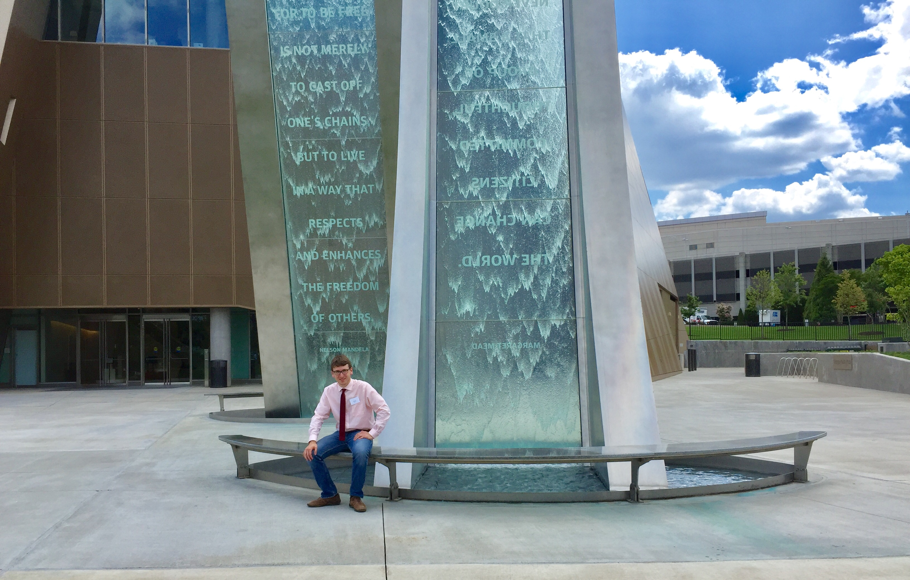

The social forces that shape human life fascinate me, from the structure of cities to the nature of poverty. During my gap year in Atlanta, I'm focusing on refugee resettlement and education policy. Whether working in classrooms or writing memos, I hope to shed light a lost generation of students caught in conflict.
That brings me to the title of this website. In part, it's a self-described analyst's nod to "Citizen Kane", arguably the most influential American film ever made and one of my favorites. But it's also a statement of purpose. I love the academic discourse and elegant theories involved in analysing a policy, program, or social phenomenon. But I also believe that meaningful analysis has to be rooted in my role as a citizen of my community, my country, and my world. Thus, "citizen" before "analyst."
Because the foundations of morality lie in our empathy, I view research in the social sciences as an instrument of morality – a tool that can be used to help vulnerable populations. The world is filled with systematic injustices, within and between countries. In the most convincing example, some people are born into horrific circumstances through no fault of thier own. It's the role of the policy maker, the researcher, and the civil servant alike to reduce that injustice.
Next year, I intend to go to college. There, I hope to study economics, Arabic, and math while also pursuing undergraduate research. After that, it's hard to say where I'll wind up. Ultimately, I hope to become a practicing economist, using mathematical tools to improve the lives of others. But only time will tell. Thanks for visiting my website! Please feel free to continue browsing, or get in touch through the "email me" button on the navigation bar and the social media links under the "Contact Me" heading on the side bar.
This website has four main pages: the Home Page provides a quick bio; my Résumé covers my academic, work, and community service experiences; the Projects page describes the research I'm currently pursuing, and my Blog is a repository for other thoughts. Please feel free to browse and learn more about me.
I confess to not using social media as much as I perhaps should. Even so, if you want to stay in touch, you can email me with the button above (preffered), or contact me by clicking on any of the icons below.